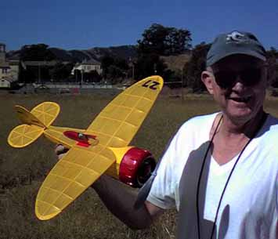

| 
This is another picture of Jerry, with his rubber powered Cessna CR-3 racer. Built based on a Model Builder plan, It was reduced from 22" to 20" with an all up weight of 30 grams. Not too bad, considering that huge cowl is all wood. The plans show the cowl as a combination of balsa and bond paper, but after repairing it a few times, Jerry replaced it with an all balsa version. He claims it is hard to trim, but other than a little mushing, it looked great in the air, and was gliding just fine.
The initial flight was made with a loop of 1/4", resulting in a near OOS climb. It was a bit nose heavy, but found a soft spot and survived. Current power is a single loop of 0.175, 18-20" long. This provides a nice flight, slowly climbing up to about 50 feet in still air. Jerry was given a bit of a thrill with a 82 second flight that only drifted a couple hundred feet. It was great to watch the sun streaming through the yellow covering on a severe clear day. |
Copyright 1999, Thayer Syme. All rights reserved